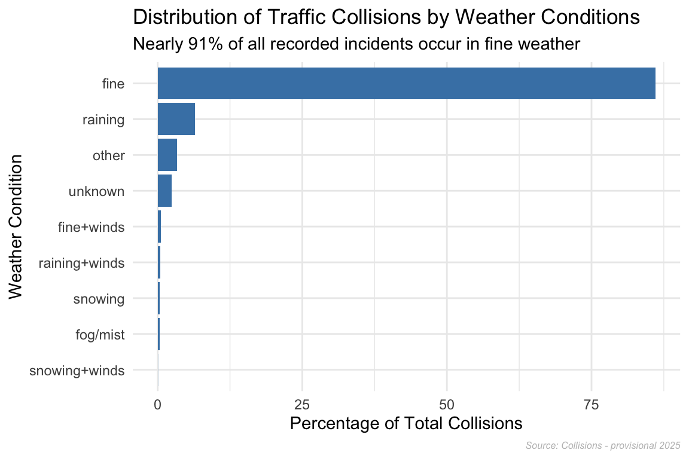
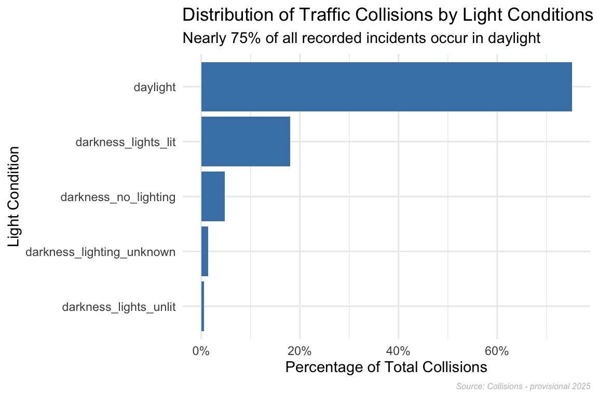
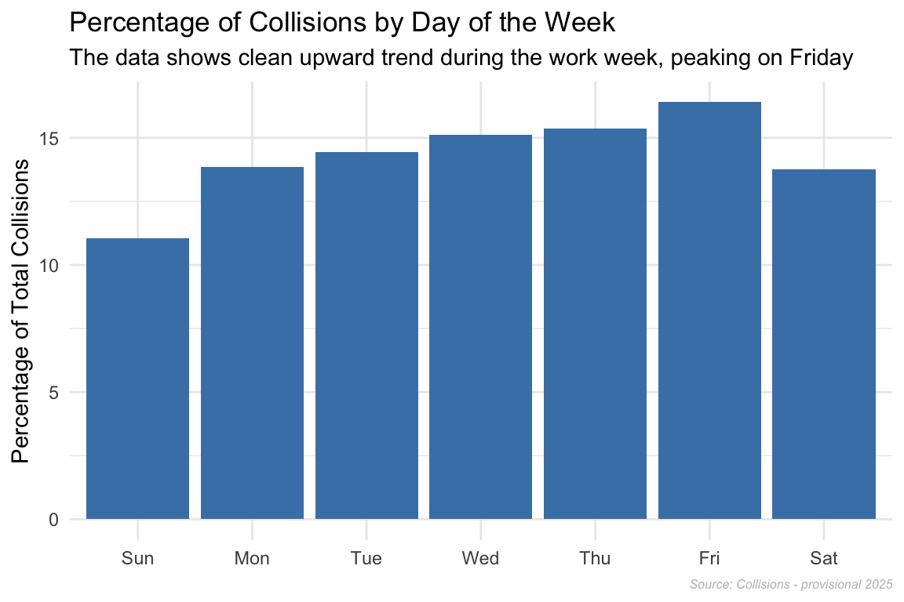
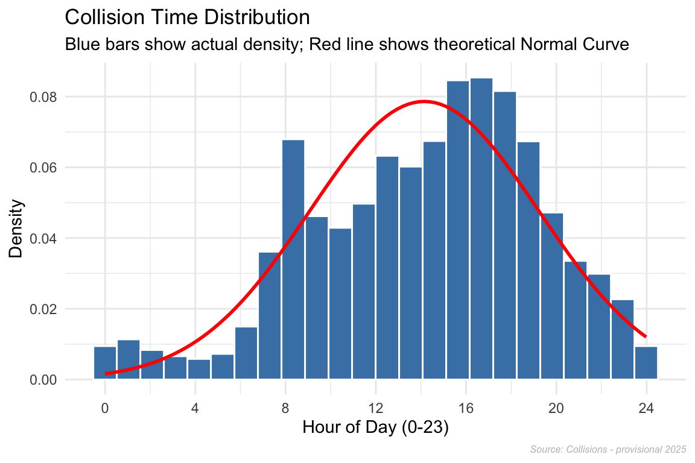
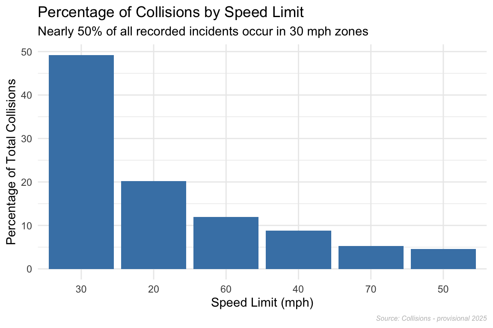
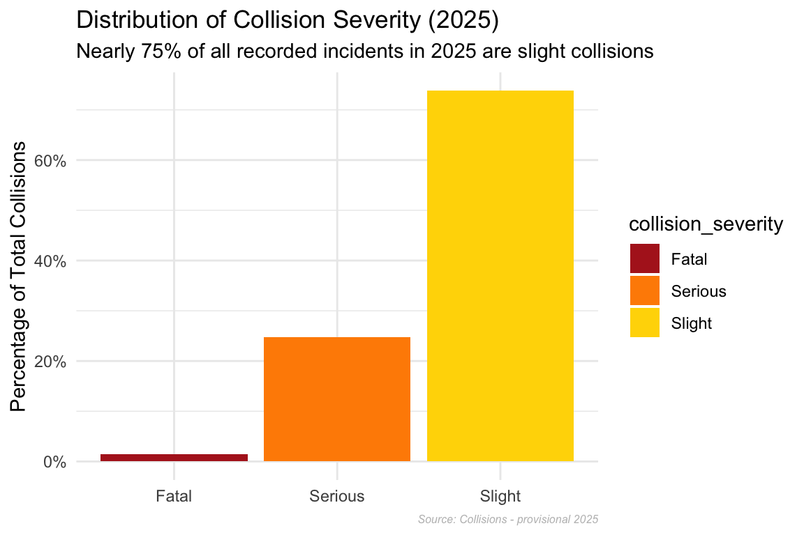
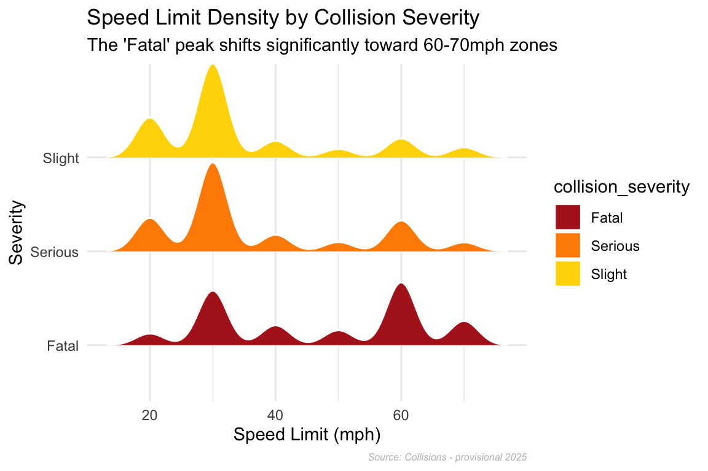
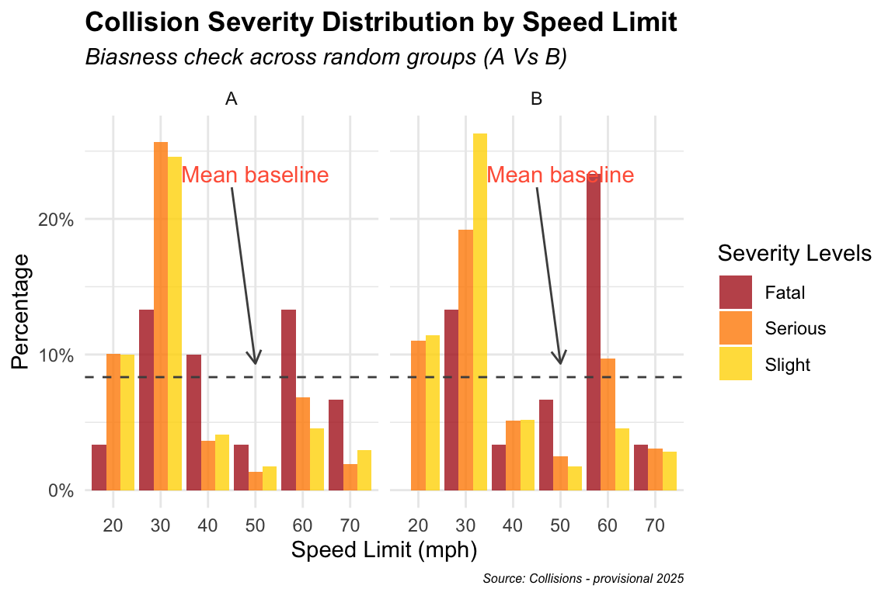
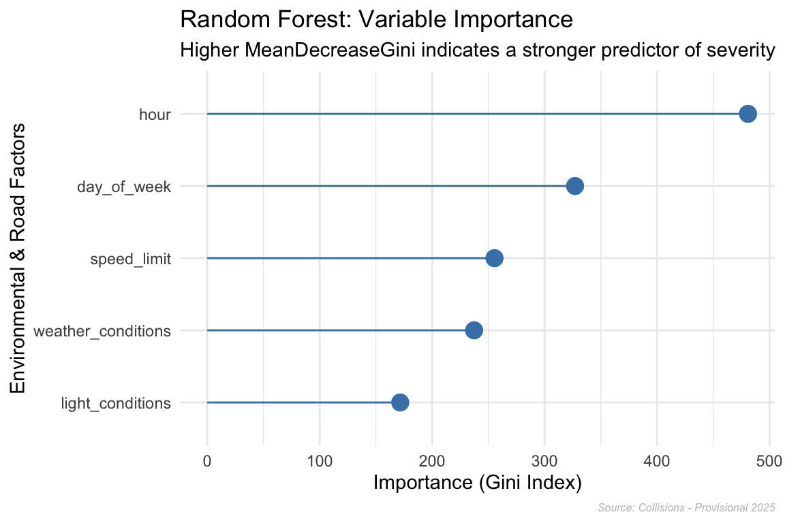

library(dplyr)
library(ggplot2)
library(readr)
library(ggridges)
library(randomForest)
library(caret) # For the train/test splitUK Road Safety
Research Objectives
In this analysis, I looked at the 2025 UK Road Safety data to understand what actually causes dangerous car crashes. I wanted to move beyond just basic numbers and find the real-world stories hidden in the dataset.
I focused on four main areas:
The “Good Weather” Trap: Investigating why 91% of crashes happen in fine weather—is it because drivers are less careful when conditions seem perfect?
Speed vs. Risk: Comparing how 30 mph zones drive crash volume, while 60 mph zones drive much higher severity.
Weekly Trends: Analyzing the “Friday Surge” to see how collision risk builds up as the work week ends.
Daily Danger Windows: Pinpointing the exact times, like the 15:00 peak, where the roads become most volatile for collision.
Data Wrangling
Loading Required library
Data Loading and Storage
# Extracting from Source
df <- read_csv("https://data.dft.gov.uk/road-accidents-safety-data/dft-road-casualty-statistics-collision-provisional-2025.csv",show_col_types = FALSE)
print(paste("Data Extracted from source on:", Sys.Date()))[1] "Data Extracted from source on: 2026-03-19"if (!dir.exists("data/raw")) {
dir.create("data/raw", recursive = TRUE)
}
write_csv(df, "data/raw/collision.csv")Data Cleaning & Feature Engineering
# Missing Value check
missing_value <- data.frame(
Columns = colnames(df),
Negative_Placeholders=sapply(df,function(x) sum(x==-1,na.rm=TRUE)),
NA_Count = colSums(is.na(df)),
row.names = NULL
)
missing_value %>%
filter(NA_Count !=0 | Negative_Placeholders != 0) %>%
knitr::kable(
col.names = c("Column Name", "Negative Placeholders (-1)", "NA Count"),
align = "lrr",
caption = "Audit (Source: Collisions - Provisional 2025)"
)%>%
kableExtra::kable_styling(
bootstrap_options = c("striped", "hover", "condensed", "responsive"),
full_width = FALSE,
position = "center"
) %>%
kableExtra::scroll_box(width = "100%", height = "300px")| Column Name | Negative Placeholders (-1) | NA Count |
|---|---|---|
| location_easting_osgr | 0 | 1 |
| location_northing_osgr | 0 | 1 |
| longitude | 0 | 1 |
| latitude | 0 | 1 |
| local_authority_district | 48472 | 0 |
| local_authority_highway_current | 0 | 3 |
| first_road_number | 1 | 0 |
| speed_limit | 185 | 0 |
| junction_detail_historic | 33434 | 0 |
| junction_detail | 5410 | 0 |
| junction_control | 21093 | 0 |
| second_road_class | 6215 | 0 |
| second_road_number | 11615 | 0 |
| pedestrian_crossing_human_control_historic | 31409 | 0 |
| pedestrian_crossing_physical_facilities_historic | 31411 | 0 |
| pedestrian_crossing | 928 | 0 |
| light_conditions | 307 | 0 |
| weather_conditions | 422 | 0 |
| road_surface_conditions | 922 | 0 |
| special_conditions_at_site | 31898 | 0 |
| carriageway_hazards_historic | 31898 | 0 |
| carriageway_hazards | 918 | 0 |
| did_police_officer_attend_scene_of_accident | 609 | 0 |
| trunk_road_flag | 48472 | 0 |
| lsoa_of_accident_location | 1823 | 0 |
| enhanced_severity_collision | 17179 | 0 |
df_clean <- df %>%
na.omit() %>%
# Selecting only relevant columns for analysis
select(
collision_index,collision_severity,number_of_vehicles,
number_of_casualties,date,day_of_week,
weather_conditions,light_conditions,road_type,speed_limit,time
) %>%
# Changing datatype for Date
mutate(date = as.Date(date,format="%d/%m/%Y"),
day_of_week = factor(day_of_week,levels = 1:7,
labels = c("Sun", "Mon", "Tue",
"Wed", "Thu", "Fri",
"Sat"),ordered = TRUE)) %>%
filter(!speed_limit == -1,
!weather_conditions ==-1,
!light_conditions == -1) %>%
mutate(weather_conditions = factor(
weather_conditions,
levels = c(1,2,3,4,5,6,7,8,9),
labels=c(
"fine","raining","snowing",
"fine+winds","raining+winds",
"snowing+winds","fog/mist","other","unknown")),
light_conditions=factor(
light_conditions,
levels=c(1,4,5,6,7),
labels=c(
"daylight",
"darkness_lights_lit",
"darkness_lights_unlit",
"darkness_no_lighting",
"darkness_lighting_unknown")),
collision_severity=factor(
collision_severity,
levels =c(1,2,3),
labels =c("Fatal","Serious","Slight")),
hour =as.numeric(substr(time,1,2)),
speed_bucket=as.factor(ifelse(speed_limit >40, "high_speed",'low_speed'))
)
write.csv(df_clean,"data/processed/clean.csv")
cat("Cleaned dataset with", nrow(df_clean), "rows and", ncol(df_clean), "columns.") Cleaned dataset with 47811 rows and 13 columns.df_clean %>%
slice_sample(n = 10) %>%
knitr::kable(
caption = "Random Sample of Cleaned 2025 UK Road Safety Data",
booktabs = TRUE
) %>%
kableExtra::kable_styling(
bootstrap_options = c("striped", "scale_down", "condensed", "responsive"),
full_width = FALSE,
position = "center"
)| collision_index | collision_severity | number_of_vehicles | number_of_casualties | date | day_of_week | weather_conditions | light_conditions | road_type | speed_limit | time | hour | speed_bucket |
|---|---|---|---|---|---|---|---|---|---|---|---|---|
| 2025401572098 | Slight | 3 | 4 | 2025-03-20 | Thu | fine | darkness_lights_lit | 6 | 50 | 19:45:00 | 19 | high_speed |
| 2025010578964 | Slight | 2 | 1 | 2025-06-05 | Thu | fine | darkness_lights_lit | 6 | 30 | 21:55:00 | 21 | low_speed |
| 2025221541514 | Slight | 2 | 2 | 2025-01-08 | Wed | fine | daylight | 3 | 70 | 07:57:00 | 7 | high_speed |
| 2025552500245 | Serious | 1 | 1 | 2025-01-05 | Sun | raining+winds | darkness_no_lighting | 6 | 60 | 17:10:00 | 17 | high_speed |
| 2025201581982 | Slight | 2 | 1 | 2025-04-25 | Fri | fine | daylight | 6 | 30 | 14:14:00 | 14 | low_speed |
| 2025461564208 | Slight | 3 | 1 | 2025-03-11 | Tue | fine | daylight | 3 | 70 | 13:58:00 | 13 | high_speed |
| 2025461543528 | Serious | 2 | 2 | 2025-01-17 | Fri | fine | darkness_lights_lit | 6 | 30 | 18:05:00 | 18 | low_speed |
| 2025461543866 | Slight | 2 | 1 | 2025-01-10 | Fri | fine | daylight | 6 | 30 | 12:30:00 | 12 | low_speed |
| 2025231544363 | Fatal | 2 | 2 | 2025-01-17 | Fri | fine | darkness_no_lighting | 6 | 50 | 07:24:00 | 7 | high_speed |
| 2025101539449 | Slight | 2 | 1 | 2025-01-09 | Thu | fine | darkness_lights_lit | 6 | 30 | 08:35:00 | 8 | low_speed |
Data Integrity: Filtered out placeholder values (-1) in speed limits,weather and light conditions. Including these would have skewed the mean/median.
Factorization: Converted numeric codes into ordinal factors (i.e., Fatal > Serious > Slight). This allowed for logical ordering in visualizations rather than alphabetical sorting.
Temporal Engineering: Extracted the hour from time strings to create a numerical hour variable.
Speed Bucketing: Engineered a binary speed_bucket (> 40 mph) to isolate and analyze high-severity risk zones.
Exploratory Data Analysis (EDA)
Environmental Factors:
df_clean %>%
group_by(weather_conditions) %>%
summarise(
Total_collision = n(),.groups = 'drop') %>%
mutate(
percentage_of_collision=Total_collision*100/sum(Total_collision))%>% ggplot(aes(x=reorder(weather_conditions,percentage_of_collision),y=percentage_of_collision))+
geom_col(fill='steelblue')+
labs(
title= "Distribution of Traffic Collisions by Weather Conditions",
subtitle="Nearly 91% of all recorded incidents occur in fine weather",
caption = "Source: Collisions - provisional 2025",
x= "Weather Condition",
y= "Percentage of Total Collisions"
)+
coord_flip()+
theme_minimal()+
theme(
plot.caption = element_text(size=6,color="gray",face="italic")
)
df_clean %>%
count(light_conditions) %>%
mutate(prop = n/sum(n)) %>%
ggplot(aes(x=reorder(light_conditions,prop),y=prop))+
coord_flip()+
scale_y_continuous(labels= scales::percent_format())+
geom_col(fill = "steelblue")+
labs(
title = "Distribution of Traffic Collisions by Light Conditions",
subtitle = "Nearly 75% of all recorded incidents occur in daylight",
caption = "Source: Collisions - provisional 2025",
x = "Light Condition",
y = "Percentage of Total Collisions"
) +
theme_minimal()+
theme(
plot.caption = element_text(size=6,color="gray",face="italic")
)
- From the above two figures we can see 91% of incidents happen in Fine weather conditions and 75% of incidents occur in Daylight.
- As most collisions occur under fine conditions, suggesting temporal factors or road conditions are the primary drivers of frequency rather than environmental hazards.
Temporal Factors:
df_clean %>%
count(day_of_week) %>%
mutate(percentage = n*100/sum(n)) %>%
ggplot(aes(x=day_of_week,y=percentage))+
geom_col(fill="steelblue")+
labs(
title = "Percentage of Collisions by Day of the Week",
subtitle = "The data shows clean upward trend during the work week, peaking on Friday",
x=NULL,
y = "Percentage of Total Collisions",
caption = "Source: Collisions - provisional 2025"
) +
theme_minimal()+
theme(
plot.caption = element_text(size=6,color="gray",face="italic")
)
df_clean %>%
ggplot(aes(x = as.numeric(time)/3600)) +
geom_histogram(aes(y = after_stat(density)),
bins = 24,
fill = "steelblue",
color = 'white') +
stat_function(fun = dnorm,
args = list(mean = mean(as.numeric(df_clean$time)/3600, na.rm = TRUE),
sd = sd(as.numeric(df_clean$time)/3600, na.rm = TRUE)),
color = "red", size = 1) +
scale_x_continuous(breaks = seq(0, 24, by = 4)) + # Added missing + here
labs(
title = "Collision Time Distribution",
subtitle = "Blue bars show actual density; Red line shows theoretical Normal Curve",
x = "Hour of Day (0-23)",
y = "Density",
caption = "Source: Collisions - provisional 2025"
) +
theme_minimal()+
theme(
plot.caption = element_text(size=6,color="gray",face="italic")
)
- Distribution of Time (Hour) shows that most collision happens in afternoon (around 03 pm) and it is left skewed means longer tail in the left region of the distribution curve. So more accident is around 15 hours.
- As expected, there is an upward trend in number of collision during the work week, peaking on Friday.
Speed limit Factors:
df_clean %>%
count(speed_limit) %>%
mutate(percentage = n*100/sum(n)) %>%
ggplot(aes(x=reorder(speed_limit,-percentage),y=percentage))+
geom_col(fill="steelblue")+
labs(
title = "Percentage of Collisions by Speed Limit",
subtitle = "Nearly 50% of all recorded incidents occur in 30 mph zones",
x = "Speed Limit (mph)",
y = "Percentage of Total Collisions",
caption = "Source: Collisions - provisional 2025"
) +
theme_minimal()+
theme(
plot.caption = element_text(size=6,color="gray",face="italic")
)
df_clean %>%
count(collision_severity) %>%
mutate(percentage = n /sum(n)) %>%
ggplot(aes(x=collision_severity,y=percentage,fill = collision_severity))+
geom_col()+
scale_y_continuous(labels = scales::percent_format())+
scale_fill_manual(values = c("Fatal"="firebrick","Serious" = "darkorange",
"Slight" ="gold"))+
labs(
title = "Distribution of Collision Severity (2025)",
subtitle = "Nearly 75% of all recorded incidents in 2025 are slight collisions",
x = NULL,
y = "Percentage of Total Collisions",
caption = "Source: Collisions - provisional 2025"
) +
theme_minimal()+
theme(
plot.caption = element_text(size=6,color="gray",face="italic")
)
ggplot(df_clean, aes(x = speed_limit, y = collision_severity, fill = collision_severity)) +
geom_density_ridges(scale = 1,color='white')+
scale_fill_manual(values = c("Fatal"="firebrick","Serious" = "darkorange",
"Slight" ="gold"))+
labs(
title = "Speed Limit Density by Collision Severity",
subtitle = "The 'Fatal' peak shifts significantly toward 60-70mph zones",
x = "Speed Limit (mph)",
y = "Severity",
caption = "Source: Collisions - provisional 2025"
) +
theme_minimal()+
theme(
plot.caption = element_text(size=6,color="gray",face="italic")
)
- In 30 mph zones, people die because there are so many crashes (high volume). In 60 mph zones, people die because the crashes are more lethal (high speed), even though there are fewer total crashes.
- The temporal distribution of collisions is Bi modal with a Slight Left Skew. While there is a significant peak during the morning commute (08:00), the majority of incidents are concentrated in the afternoon and evening, specifically peaking between 15:00 and 17:00. This concentration in the later hours pulls the median toward the end of the day, resulting in a negative (left) skew relative to a perfectly symmetric distribution.
Bias and Fiairness
To ensure the integrity of the analysis, a stability check was performed to identify any potential sampling bias.
set.seed(42) # for reproducibility
df_sample <- df_clean %>%
mutate(random_group = sample(c("A","B"), size = n(), replace = TRUE)) %>%
sample_n(2000) %>%
select(speed_limit, collision_severity, random_group)
df_summary <- df_sample %>%
table() %>%
prop.table(margin = 2) %>% # for columns wise summation
as.data.frame()
mean_prop <- mean(df_summary$Freq) #Using global mean of Proportion for baseline
df_summary %>%
ggplot(aes(x= speed_limit,
y= Freq,
fill=collision_severity))+
geom_col(position ="dodge",alpha = 0.8)+
facet_wrap(~random_group)+
scale_y_continuous(labels=scales::percent_format())+
scale_fill_manual(values = c("Fatal"="firebrick","Serious" = "darkorange",
"Slight" ="gold"))+
geom_hline(yintercept = mean_prop,linetype="dashed",color="gray30")+
annotate("text",x = 4,y = mean_prop+0.15,label= "Mean baseline",
color="tomato")+
annotate("segment",x = 3.5,y = mean_prop+0.14,xend = 4,
yend = mean_prop+0.01,color = "gray30",
arrow=arrow(length=unit(0.1,"inches")) )+
labs(
x="Speed Limit (mph)",
y='Percentage',
title='Collision Severity Distribution by Speed Limit',
subtitle = "Biasness check across random groups (A Vs B) ",
fill = "Severity Levels",
caption = "Source: Collisions - provisional 2025"
)+
theme_minimal()+
theme(plot.title= element_text(face="bold"),
plot.caption = element_text(size=6,face="italic"),
plot.subtitle = element_text(face="italic")
)
Final Conclusion for Bias and Fairness:
A Fairness check was performed using a random sample of 2,000 observations to evaluate if the distribution of Collision Severity remain same across two groups (A&B).
Observations: The distribution of severity levels remains consistent across sub-samples. While Slight collisions naturally dominate low-speed areas, the pattern is uniform and stable across random partitions.
Conclusion: The high degree of similarity between the sampled groups confirms that the sampling process is unbiased. This demonstrates demographic parity, ensuring the results are representative of the entire population and not driven by selection bias.
Hypothesis Testing & Confidence Intervals
- \(H_0\): There is no difference in mean severity between speed buckets.
- \(H_a\): Mean severity in high-speed zones is more dangerous than lower speed area.
print(t.test(as.numeric(collision_severity) ~ speed_bucket, alternative = "less", data = df_clean))
Welch Two Sample t-test
data: as.numeric(collision_severity) by speed_bucket
t = -19.463, df = 14593, p-value < 2.2e-16
alternative hypothesis: true difference in means between group high_speed and group low_speed is less than 0
95 percent confidence interval:
-Inf -0.1047167
sample estimates:
mean in group high_speed mean in group low_speed
2.634298 2.748682 Final Conclusion for hypothesis testing:
- There is evidence that collisions in higher-speed areas (>40mph) result in higher severity outcomes.
- We are 95% confident that the mean severity score for high-speed regions is at least 0.105 points lower (indicating higher physical danger) than for lower-speed regions.
Modeling Collision Severity
set.seed(42)
model_df <- df_clean %>%
select(collision_severity, speed_limit, weather_conditions,
light_conditions, hour,day_of_week)
# Train/Test Split (70/30)
trainIndex <- createDataPartition(model_df$collision_severity, p = 0.7,
list = FALSE)
train_data <- model_df[trainIndex, ]
test_data <- model_df[-trainIndex, ]
# Model Training
rf_model <- randomForest(collision_severity ~ .,
data = train_data,
ntree = 100,
importance = TRUE)
# Feature Importance Visualization
importance_data <- as.data.frame(importance(rf_model))
importance_data$Variable <- rownames(importance_data)
ggplot(importance_data, aes(x = reorder(Variable, MeanDecreaseGini), y = MeanDecreaseGini)) +
geom_point(size = 4, color = "steelblue") +
geom_segment(aes(x = Variable, xend = Variable, y = 0,
yend = MeanDecreaseGini), color = "steelblue") +
coord_flip() +
labs(
title = "Random Forest: Variable Importance",
subtitle = "Higher MeanDecreaseGini indicates a stronger predictor of severity",
x = "Environmental & Road Factors",
y = "Importance (Gini Index)",
caption = "Source: Collisions - Provisional 2025"
) +
theme_minimal()+
theme(
plot.caption = element_text(size=6,color="gray",face="italic")
)
Final Conclusion for Random Forest Model:
- The Random Forest model demonstrates how Day of the week, Speed Limit and Hour are the most influential variables in determining the severity of a collision.
- Environmental factors (Weather/Light) have a lower Gini Importance, suggesting that driver behavior (speed) and timing (after 03 pm) are more critical risk indicators than rain or darkness.
Model Evaluation
# Generate Predictions on Test Data
rf_preds <- predict(rf_model, newdata = test_data)
# Confusion Matrix
conf_matrix <- table(Predicted = rf_preds, Actual = test_data$collision_severity)
print(conf_matrix) Actual
Predicted Fatal Serious Slight
Fatal 0 0 0
Serious 3 42 108
Slight 202 3510 10477# Calculate Overall Accuracy
accuracy <- sum(diag(conf_matrix)) / sum(conf_matrix)Final Conclusion on Model Accuracy:
- Overall the model has high accuracy of ~74% indicates strong relationship between hour, day_of_week, Speed limit and Collision outcome.
- If we look at the data honestly, nearly 74% of all 2025 collisions are ‘Slight’ incidents. This is why the model is so accurate; it has become an expert at identifying the most common types of road accidents.
Future Work: While I’m satisfied with a 74% baseline, the distribution chart shows us that the model is naturally biased toward the majority Slight category so over sampling would make the model fair to severe collision.